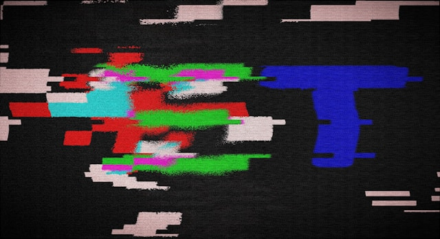
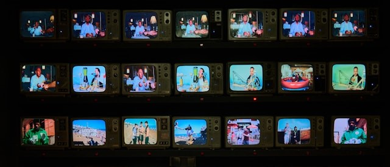

Diagnóstico Situacional
- Mapeo de la ansiedad digital juvenil en la post-pandemia.
- Relevamiento del impacto de las interfaces en escuelas.
- Coordinación estratégica con gabinetes psicopedagógicos.

Soporte Filosófico
- La "Infocracia" de Byung-Chul Han como matriz de control.
- Clasificación taxonómica de las trampas de Harry Brignull.
- El "Sabotaje Estético" para restaurar la distancia crítica.

Enfoque Práctico
- Simulación de toma de decisiones en el "Banco de Pruebas".
- Evaluación del automatismo psicomotor frente al clic rápido.
- Medición del impacto de la fricción sobre la paciencia cognitiva.
Repositorio de la resistencia//Enlaces externos
Este apartado expone el esqueleto metodológico de nuestra investigación. Un mapa conceptual abierto que delimita las futuras líneas de acción en las aulas frente a la manipulación digital.

filter_1El Glosario de trampas
Harry Brignull: Acceso taxonomía oficial y base de datos global sobre patrones oscuros para identificar las trampas visuales corporativas en tiempo real.
Deceptive Desigh
filter_2 Ensayo Filosófico
Byung-Chul Han: La sociedad de la positividad + Descripción: "Análisis filosóficos sobre la pérdida de la verdad y el trance hipnótico del consumo sonámbulo."
Infocracia: La digitalización y la crisis de la democracia
filter_3Manuales Comunitarios
Manuales de Ciudadanía Digital Colectiva + Descripción: "Repositorio de guías didácticas y herramientas lúdicas de descarga libre para docentes y gabinetes."
Faro Digital